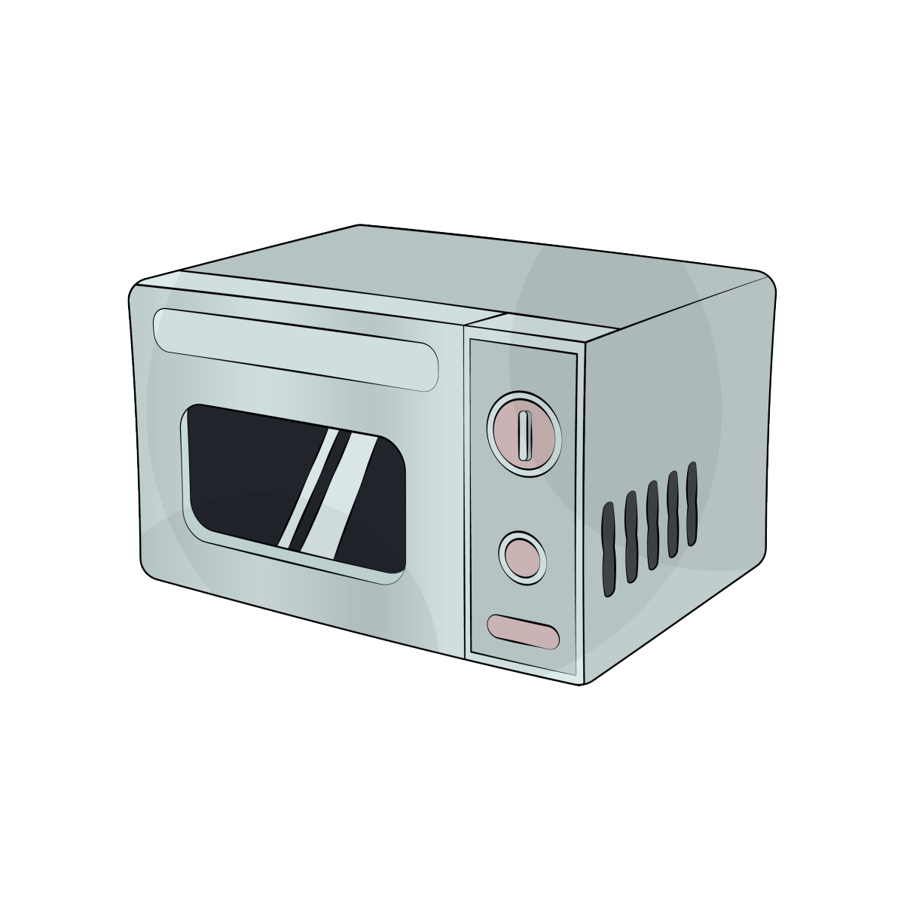

Cooking Method
Oven Baked

- To shape the buns, knead each individual dough ball to punch out any air bubbles and smooth it out. Roll it into a 4-inch circle, with the center slightly thicker than the outer edges.
- While assembling the buns, be sure to keep your hands clean. Any grease from the filling on your fingers will make it very difficult to seal them.
- Add 1 portion of filling to the bun, and crimp it closed, making sure it’s tightly sealed. Lay them seam side down on baking sheets lined with parchment paper, about 3 inches apart.
- Cover with a clean towel and allow to rise at room temperature for another hour.
- Arrange two racks in the top and bottom thirds of the oven, and preheat to 400°F/200°C. Brush the buns with egg wash, and sprinkle them with sesame seeds, if using.
- Transfer the buns to the oven, and immediately turn down the temperature to 350°F/175°C. Bake for 22-25 minutes, or until golden brown.
- Remove from the oven and immediately brush the buns with the sugar syrup while they’re still hot. Cool, and enjoy!
Steamed

- Cut 14 pieces of parchment paper into 3”x3” squares, and set aside. On a clean and lightly floured flat surface, take a dough ball, roll it out from edge to center, rotate, and repeat until it forms a 4-inch circle. The center should be slightly thicker than the edges. Your buns need solid footing, after all.
- Add about 2½ tablespoons of filling to the center, then pleat and twist the bun repeatedly until the top is closed. Sit the bun on a piece of the prepared parchment paper and place it on the rack of your steaming vessel of choice, with at least 1 cm of clearance on all sides. Repeat until all the buns are assembled.
- Check our Chinese cooking tools page for steamer setup options. You could use a steamer rack in a wok, a multi-level metal steamer or a bamboo steamer. Just make sure the steaming rack is at least 1½ inches above the water so the boiling water doesn’t touch the buns during the cooking process. Carefully put the buns inside the steamer, cover the lid, and let the buns rest for about 20 minutes (do not turn on the stove yet!).
- When the buns are ready to be cooked, turn the heat on high to start the steaming process. Once the water starts to boil and steam is visible, turn the heat down to medium, and steam the buns for another 10 minutes. After 10 minutes, shut off the heat, and let the buns rest inside the steamer for 5 minutes. DO NOT REMOVE THE COVER. This is an important step, because if you remove the cover too early, the buns will collapse and lose their fluffiness! And if you are steaming buns in multiple batches, be sure to start each batch with cold water!
- These buns can be enjoyed immediately. You can also store any leftovers in an airtight container in the refrigerator or freezer. Reheat in the microwave for about 1 minute or re-steam for about 6-8 minutes.